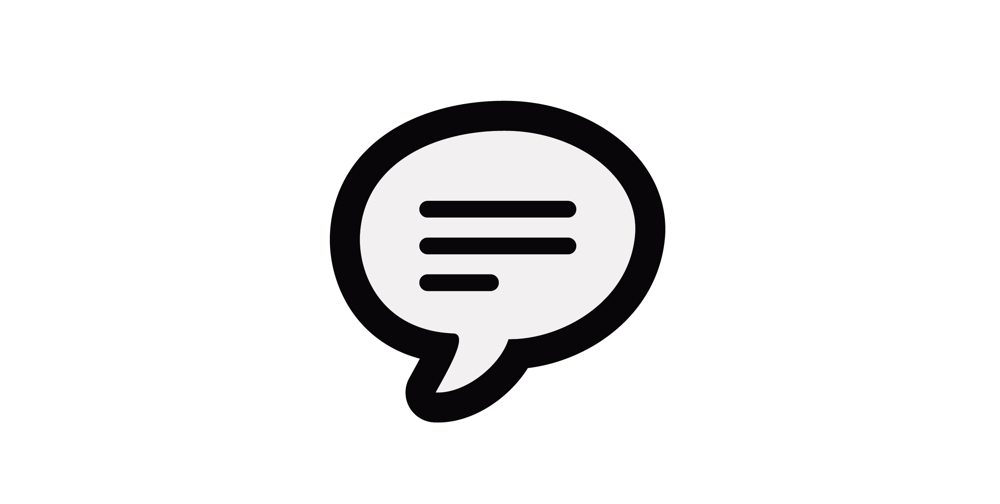
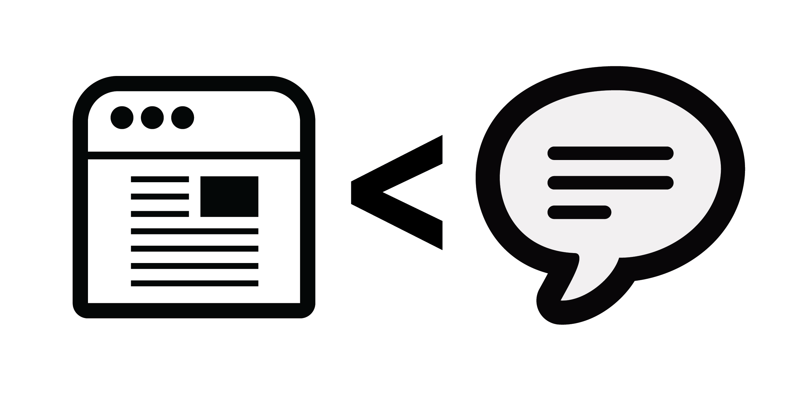
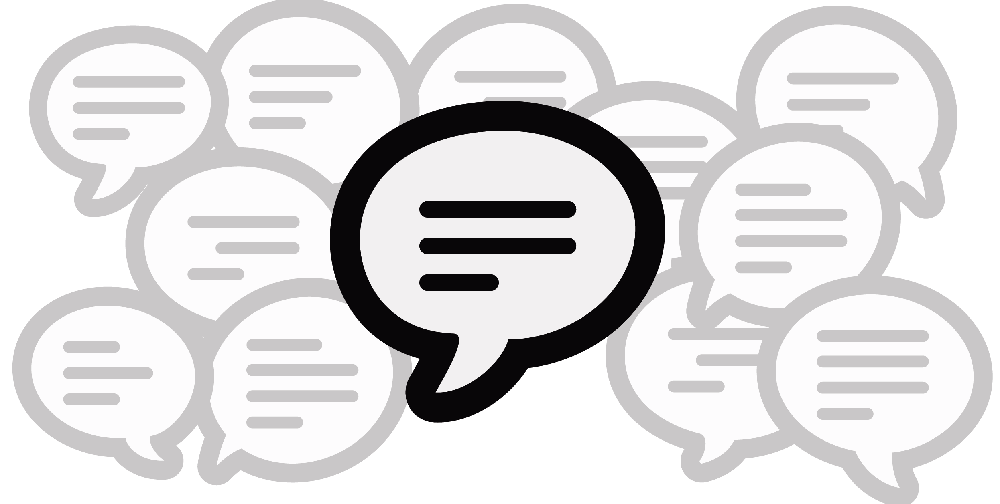
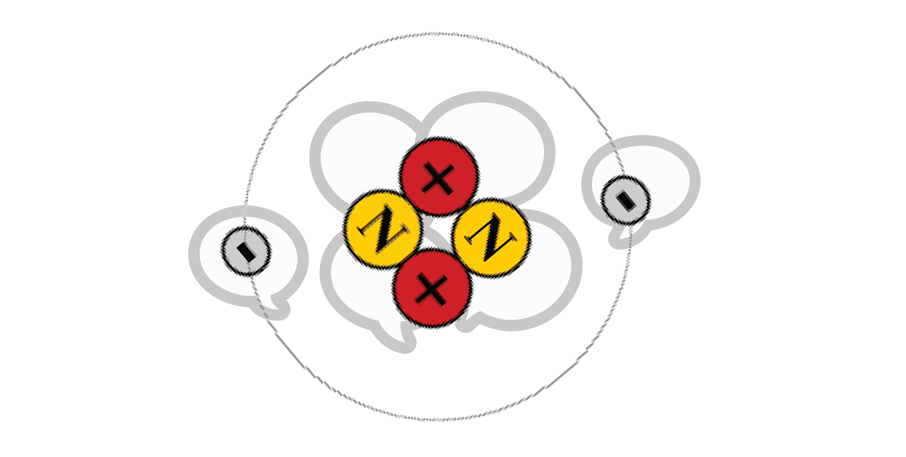
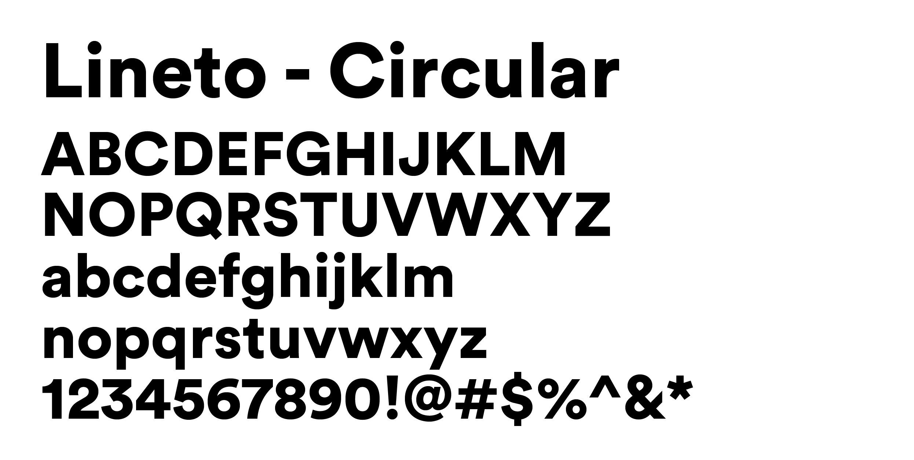
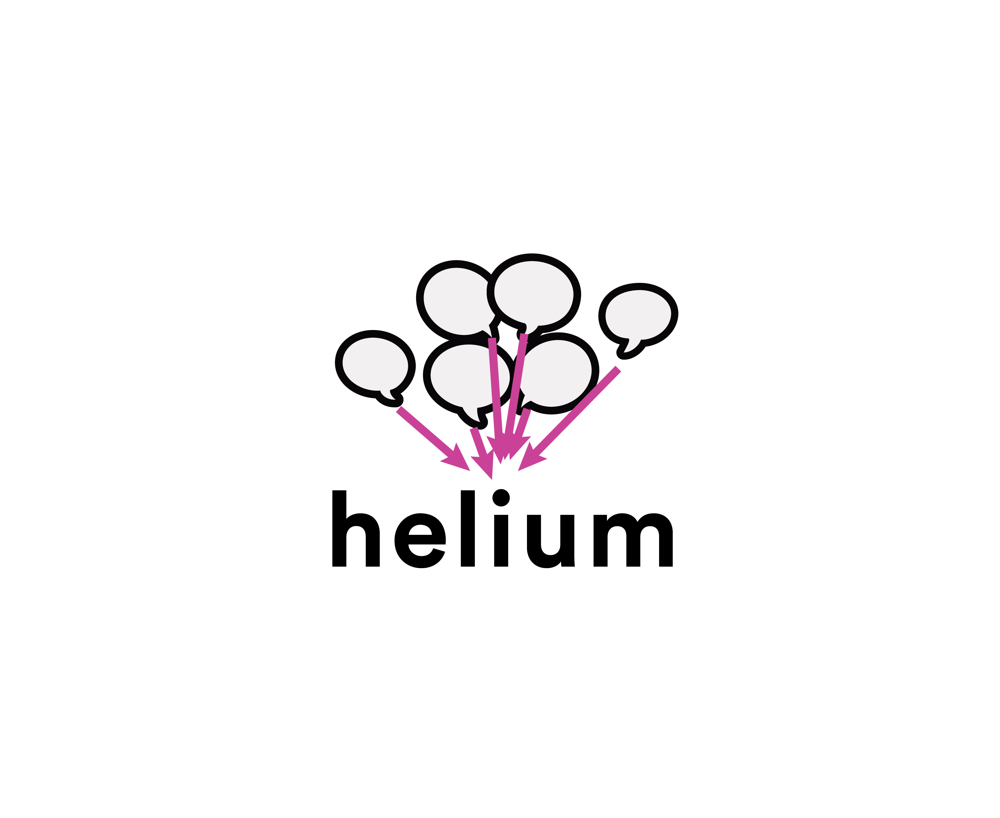
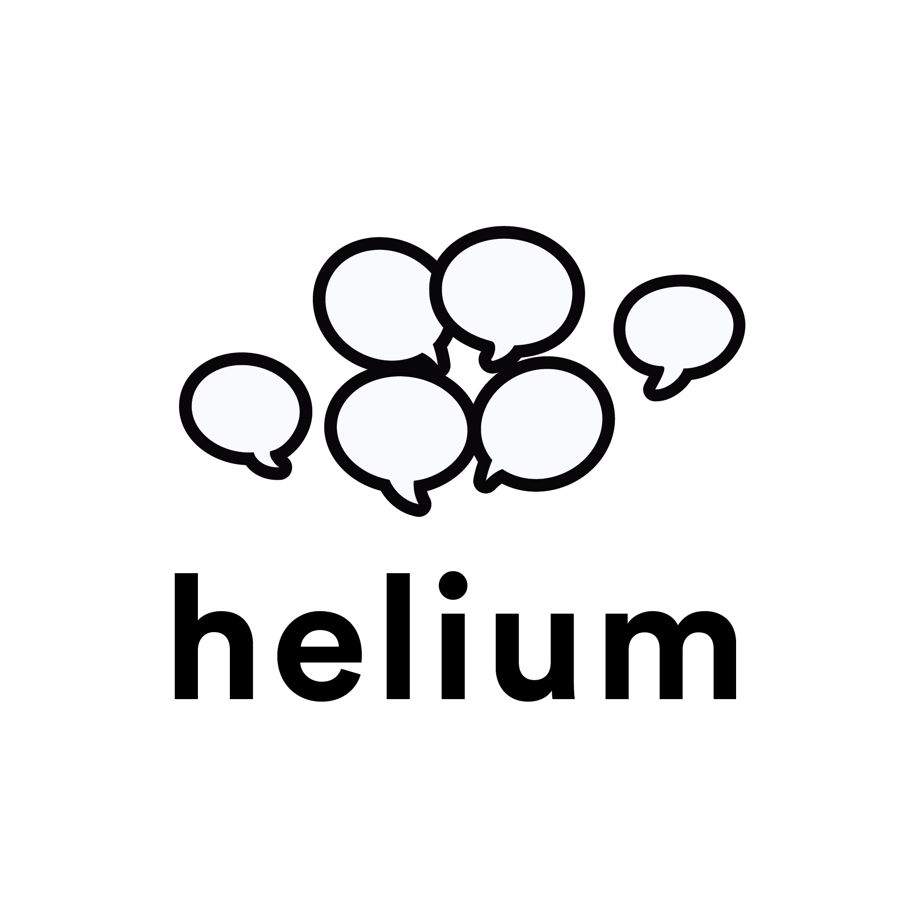

Helium – Elevated Storytelling
The Challenge
Tasked with crafting a mark that will represent an agency that is committed in delivering credible, creative and effective communication is an arduous undertaking. To distill the brand’s values and mission down to a symbol and a typeface that is lasting is challenging but after having done copious amounts of research and thinking, what we have is a mark that is obvious, timeless, friendly and credible.
What follows is the process behind how we arrived at Helium Identity.
About the Mark
As with any identity, we start with crafting a powerful yet warm logomark.
The Helium-filled Balloons
To show that Helium is an excellent communicator, we encompass the whole company ideology into one solid mark. If a picture = to 1,000 words – that is 1000x more ways to be unclear with your message. A well-researched, and crafted mark speaks succinctly and delivers the message accurately.
Words matter. Words carry weight and are impactful.
‘Micro-Stories’ is social media
What was the last ‘blog’ that you have read lately? You do not remember? Yeah, me too. But when was the last time you checked Twitter, Instagram and Facebook? Five or ten minutes ago? Are you looking at your phone while reading this?
Blogs used to be the only way we shared our random thoughts. It was an excellent medium and has now transitioned into something else. Currently, blogs are written for refined ideas, carefully planned impressions and mapped out opinions. Blogs have evolved and matured to become another way to publish and spread information without the big media gatekeepers.
Twitter, Instagram, Facebook, Snapchat, Tumblr and Vine are seeing a rise in popularity.
Why?
It is mainly because they offer a platform for bite-sized content. Micro-stories. The 140-character limit of Twitter; single photo post of Instagram; single photo showcase of Pinterest; 7-second video of Vine; and the most recent is the 30-second video clips of Snapchat — all these are easy to consume. People have a short attention span and it is a no-brainer why these platforms become the go-to of the public.
The always-on and constant sharing of where you are, what you are doing, what you are thinking, play on the voyeuristic tendencies of people of which becomes addictive.
We represent these micro-stories by the speech balloons, which also represent the collective consciousness of the public and how Helium will be able to weld these new social media platforms to relay the organization’s stories to its targeted audience.
The web is noisy, let us make sense of it.
Every minute, the internet produces 211 million online content. That is 211 and 6 zeroes with it.
211,000,000. a minute. (One Second of the Internet)
This is excessive and a ratio of those are expendable content. Not that there is anything wrong with those, hey, it is a free world.
But how do you weed out the noise from the signal?
Helium knows the internet. Helium knows social media. So let Helium make sense of the web so you do not have to.
Effective PR
Elements of a successful PR strategy:
- Goal (✨) - Identify specific goal(s) for specific campaign. In other words, what does your client want to accomplish? Understanding the product and what core value that you want others to see and be affected by is essential in crafting an effective PR plan.
- Audience (👨👩👧👦) - Are you targeting the right people? Who is reading your message? Who is seeing the message? Who are engaged?
- Reach (🖐) - Is how far the campaign or message managed to penetrate. How many views did your campaign garnered?
- Mentions (💬) - Is how many online items (posts, tweets) talk about or speak about the brand, organization, product or campaign.
- Item (✉️) - Is where you measure content (blog posts, articles, events, etc.) that originally appears as digital media. These are the by-product of your campaign whereby you have established voluntary ambassadors who share your voice and who care enough to share their testimonies in the hope to inspire/influence others further.
- Sales Results (📊) - Good PR work can lead to increase in sales but to effectively measure the relation between the PR campaign and its impact on sales generation, one has to track leads. E.g. asking buyers where they heard about the product. Here you will learn if the PR work is part of their awareness and decision-making process.
We symbolize all 6 components with the 6 speech balloons in the logo mark because:
Helium knows PR
What is Engagement?
We define engagement as “establishing a meaningful connection with your audience and vice versa.”
Engagement is Participation.
To say that the content is engaging means the content is either :
- Reposted
- Shared
- Liked
- Commented On
Helium lives by user engagement and we show that through the confluence of the four central speech balloons because engagement is at the center of successful public relations.
An Engaging Mark
To have participation, you will have to craft smart content and to be able to do that, one must have mastery of both the audience and the medium to which the message will be delivered through.
Users usually respond well to friendly mark, however, treading the line between friendly and credible is a tricky aspect. We do not want to appear too friendly that we become undependable, yet we also do not want to appear too strong and appear rigid.
That is why we choose to go with an outlined shape and not a full-on silhouette because good public relations should be friendly and not too forceful. A bold mark is stern. It should be warm, approachable but also maintain some integrity and trustworthiness.
The Helium Way
Helium’s main thrust is engagement, with user engagement, you can do so much:
- You can change beliefs
- You can weld ideas
- With the use of smart content, you can support companies
Successful PR is invisible, it is like the air you breathe. It is like the sun. It is everywhere but at the same time, it is nowhere. It is communicative but silent.
That is what Helium is, omnipresence with subtlety. In addition, the positioning of the speech balloons are the atomic configuration of the element, Helium. It is subtle but you know it is there, because Helium is the client’s secret to his success. shhh.
The Typography
Lineto’s Circuclar (LL Circular) is a typeface based on the pursuit of geometric purity; which means that the typeface is strict with its implementation of the principles of the circle, square, triangle. Though not the first to be based on this idea, LL Circular is the modern take on an old concept. The purely geometric approach gradually gives way to a more complex formal conception, resulting in a geometric Sans Serif marrying purity with warmth.
LL Circular strikes a balance between conceptual rigor, skilled workmanship and unmistakenly current, resulting in a Sans Serif typeface with distinctive character yet universal appeal.
LL Circular was designed to be invisible in fact, LL Circular was based on typeface classics like Futura, Avenir and Avant Garde, but have been translated into the modern setting while still retaining its classic foundation.
With these attributes in mind, it only makes sense for us to use Circular as our main typeface as it embodies the vision of Helium.
The intricacies that went into developing this typeface is reminiscent of how PR should be. It should look effortless but has to be immensely precise in execution.
Circular is serious, timeless, and neutral.
Just like the perfect PR campaign.
Signal : Noise – Message Dissemination
Consequentially, the letter ‘i’ in helium is the person who is responsible in delivering your messages above and beyond.
When a company tasks Helium to deliver a message you can be sure that the message will reach its intended targets. Positioning the mark just above the “i” with the bubbles pointed towards it symbolize Helium’s precision in making sure that the message is received.
Helium, takes you to new heights